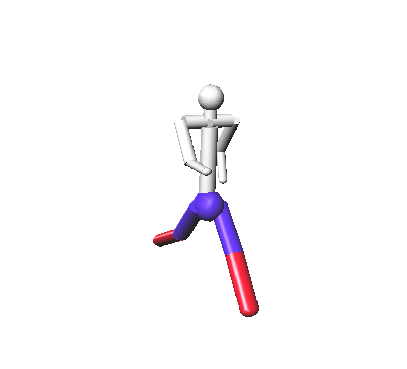
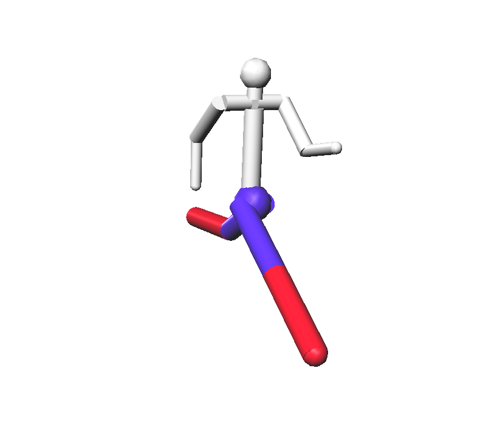
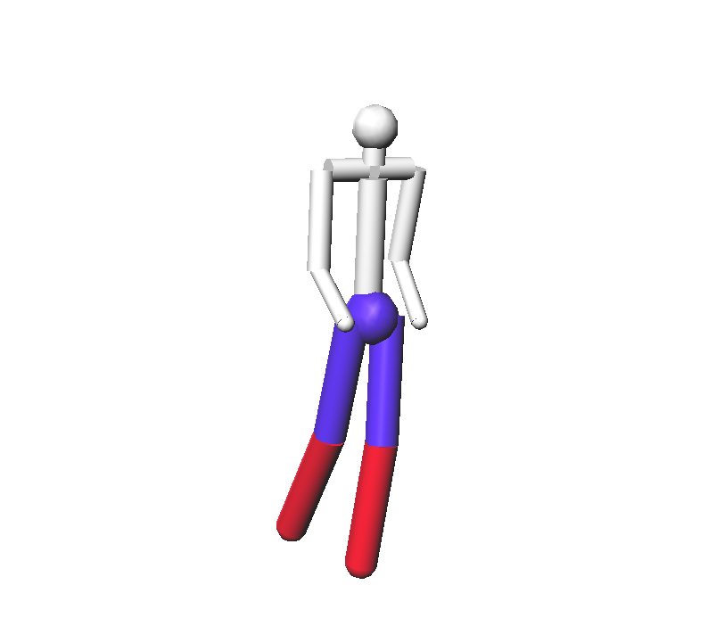
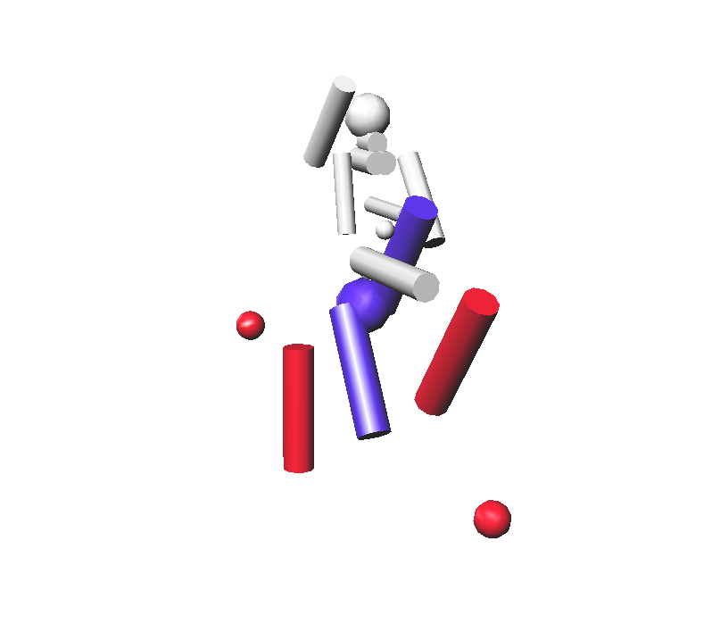
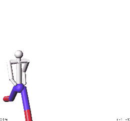

David Koh
dkoh7
Computer Graphics 600.357
Compiled using gcc with Oracle VM VirtualBox, using Ubuntu
Late Days Used: 0
The following assignment portions were implemented:
- All functions and modifications complete
- All Transformations: matrix, euler, closest, quaternion, log
- Linear interpolation, Catmull-Rom Splines, and Cubic B-Splines complete
- Generating image sequences for movies feature
Help was received from the TA's during their hours. Thanks!
To run assignment, go to the directory called "act" (/dkoh7.4/act).
Then, type the following command:
../Assignment4 --in test.ray --width 800 --height 800 --cplx 10 --factor matrix
You can also change the "factor" to euler, closest, quaternion, and log as well.
Linear interpolation, Catmull-Rom Splines, and Cubic B-Splines are also implemented.
They may be changed by going to the "parameterSamples.todo.inl" file and
changing the "type" to the one preferred.
The default is currently set to linear interpolation.
Simultaneous images may be generated and used to make a movie.
To use this feature, go to to Ray folder and open the rayWindow.cpp file.
At the top is a boolean variable called "video_on" that is set to false by default.
Simply change this variable to true, and screenshot frame by frame.
This creates many jpeg images in the same folder ("act" folder).
Using an external program, you may stitch together the images to create a movie.
To clean up the jpegs, use the rm (rm *.jpeg) command, or highlight all and delete the images.
|  |
Matrix |
|  |
Closest |
|  |
Log |
|  |
"Picasso's Dream" |
|  |
"Running Man" |